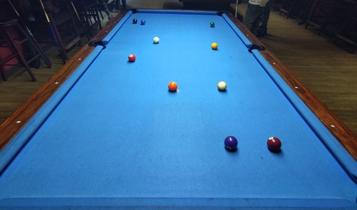

Control Your Cue Ball
Why control it?
In the game of pool, every shot is played by hitting the cue ball first. Because of this fact, cue ball position on the table is of the biggest importance. In order to win games on a higher level, the player is expected to stay on the table as long as possible, not letting their opponent take the shot. As you may already know, if your shot was successful and you made a ball, you keep shooting. In order to keep making successful shots, you need to think ahead about where you want your cue ball to be for your next shot. This is called positional play.
To play position properly is a master achievement, and any fool can make a shot
Speed
So how do you get the cue ball where you want it to be? The first and the easiest way to affect cue ball movement after the shot is changing its speed. Depending on how hard you hit the cue ball, it will travel different distances on the table. The harder you hit it, the longer the travel time. Here is an example of using different speeds to get from the 2-ball to each of the stripes:


But what if you have a straight-in shot, and your next ball is sitting on the opposite side of the table? In order to handle this kind of situation, you need to get familiar with the concept of spin.
Spin
Spin is movement of a pool ball around its axis. When you hit the cue ball on its center, it simply rolls against the tablecloth. But if you apply spin, it causes the ball to revolve around its axis as it is rolling (combination of 2 kinds of movement). Generally, there are 3 types of spin that players can use to achieve different effects on the cue ball. Let’s look at them in order.
Top Spin
Top spin is applied by hitting the cue ball above its center with the cue stick. It causes the cue ball to spin forward after it hits the object ball, which can help it travel further before slowing down.
Don’t confuse natural forward travel of the cue ball with top spin. If you don’t hit the upper part of the ball hard enough, it won’t pick up top spin, but rather travel with natural speed using the impulse it received from your stick.
Back Spin
Back spin, also known as draw, is applied by hitting the cue ball below its center with the cue stick. It causes the cue ball to spin backward, which can help it stop or go backwards after hitting an object ball.
Make sure your cue tip is thoroughly chalked before performing a draw shot. Because of the lack of friction, no chalk will result in your stick getting the cue ball in the air and possibly throwing it off the table.
Due to laws of physics, spins like top and back make the most sense when you are playing small cut shots, i.e. hitting more than 50% of the object ball with your cue ball. When you hit a ball in full, the cue ball does not get any impulse sideways, which allows the top/back spin to take full effect.
Side Spin
Side spin is applied by hitting the cue ball to the left or right of its center with the cue stick. This type of spin causes the cue ball to spin sideways after the contact, which is especially useful when playing rail position.
Unlike top and back spins, side spin is the best choice when cutting the object ball, i.e. hitting 50% or less of its diameter. An important thing to understand is that in most cases players use side spin when they expect their cue ball to hit at least one rail after the contact. Why? Because spin can greatly affect the way a pool ball reflects off the rail. Compare the examples of cue ball behavior with and without side spin:
From these examples you can see that not only does side spin alter the angle of reflection, but it also speeds up the ball. This can be useful when you want your cue ball to roll further but can’t or don’t want to apply force to it.
A Crucial Weapon in Your Arsenal - Stun Shot
Stun shot is another important type of shot to know when controlling your cue ball. Stun shot makes the cue ball stop and sit still in its spot after hitting the object ball (provided it was a straight-in shot). Such ball behavior requires the player to hit the cue ball slightly below center, so that instead of rolling it glides across the table felt.
What's Next?
Once you master these spins, you can combine them in one shot, and try to play them with cuts of different size. With this many tools in your arsenal, you can achieve just about any kind of position for your next shot. But what you need the most to master these is PRACTICE! There is a bunch of practice tools on the market that can help you get the hang of cue ball spins. Check out this one as an example.
All these techniques and their combinations are widely used by professional players to get the position they need. Sometimes players show such incredible precision on their shots that their cue ball might look like a radio-controlled toy car! Take a look at an American player Corey Deuel getting position from the pink 4-ball to the orange 5!